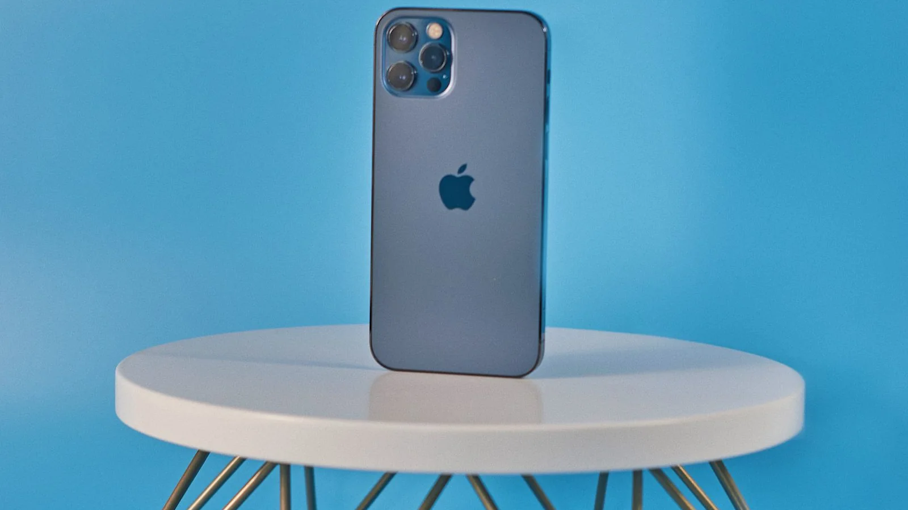

Как экономить заряд iPhone: сначала найдите причину расхода
Несколько точечных настроек помогут дотянуть до вечера. Экономия заряда сегодня и сохранение ресурса аккумулятора — разные задачи.

Сначала проверьте расход
Откройте Настройки → Аккумулятор и посмотрите расход по приложениям. Долгая работа экрана отличается от фоновой активности. Сравнивайте похожие дни: обещать всем «вдвое больше автономности» нельзя.
Если заряда должно хватить до вечера
- Включите режим энергосбережения в настройках аккумулятора. На некоторых версиях iOS он находится в разделе режима питания. Часть фоновой работы и эффектов сокращается; почта и другие обновления могут приходить позже.
- Уменьшите избыточную яркость и время автоблокировки. Экран должен оставаться удобным для чтения.
- Ограничьте фоновую работу конкретного приложения с большим расходом, если вам не нужны его мгновенные обновления. Отключать все полезные функции ради небольшой экономии не обязательно.
Лимит зарядки решает другую задачу
На поддерживаемых iPhone доступны лимиты зарядки. Низкий лимит даёт меньше заряда на сегодня, но уменьшает время при полном заряде. Выбирайте его, если позволяет ваш распорядок; перед долгой поездкой может понадобиться 100%.
Аккумулятор уже изношен?
Проверьте состояние аккумулятора и рекомендации по обслуживанию. Настройки не возвращают старому аккумулятору исходную ёмкость. При внезапном падении автономности сначала изучите расход приложений и недавние обновления.
Названия пунктов зависят от модели и iOS. На обложке — иллюстративное фото устройства, а не скриншот описанных настроек.
Источники: Apple: battery usage · Apple: Low Power Mode · Apple: battery performance · Apple: charging limits · Photo: Alex Ugolkov / Pexels
05.10.2026